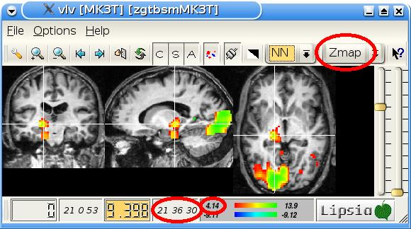

The similarity between fMRI time series can be investigated using temporal correlation (see 'vlcorr', 'vgetcovariates'). However, this measure is strongly affected by temporal shifts between the fMRI time series. For example, the correlation coefficient between two identical sine curves is zero, if these curves have a temporal displacement of pi/2.
Hemodynamic responses show temporal shifts in the range of seconds which dramatically influence the correlation coefficient between them. Thus, the correlation coefficient obtained in the temporal domain might only partly reflect the linear dependence between fMRI time series.
Using the measure of spectral coherence, derived from the spectral representation of the cross-covariance function, the relationship between fMRI time series can be evaluated taking different temporal displacements of the fMRI signal into account. The spectral coherence is a reliable measure for the degree of the linear dependence between fMRI time series, even if there are large phase shifts between these time series. Moreover, these phase shifts can further be investigated using spectral methods.
The following figure shows differences between correlation and coherence maps (caused by the different temporal shifts of the BOLD signal between brain regions). In our example, frontal regions (see red arrow) show an earlier BOLD response then occipital regions (see also curves in the middle). Therefore, these frontal regions do not show a correlation with the reference region (see black cross in figure).References:
Müller K, Lohmann G, Bosch V, von Cramon DY.
On multivariate spectral analysis of fMRI time series.
NeuroImage 2001:14:347--356.
Müller K, Mildner T, Lohmann G, von Cramon DY.
Investigating the stimulus-dependent temporal dynamics
of the BOLD signal using spectral methods.
Journal of Magnetic Resonance Imaging 17:2003:375--382.
1. For using 'vspectral', the fMRI experiment must be designed using a periodic stimulation, e.g., presenting the same stimulus every 20 seconds. The cycle length is the time between 2 stimuli. This cycle length must be specified using the required command line option '-freq'. The cycle length has to be specified in timesteps, e.g. if the stimulus is presented every 20 seconds and TR=0.5 s, then 'vspectral' must be called using '-freq 40'.
2. The number of timesteps between two presentations of the stimulus (specified by '-freq') should be larger than 10. The following configurations should be possible: ['-freq 40', tr=0.5s (cycle=20s)] or ['-freq 13', tr=2s (cycle=26s)]. The configuration ['-freq 7', tr=2s (cycle=14s)] is not possible because there are only 7 timesteps between 2 stimuli (which is less than 10).
3. A reasonable number of stimuli must be presented during the experimental session. We suggest to present the stimulus more than 10 times, i.e., the periodic stimulus presentation should have more than 10 complete cycles.
Per default, 'vspectral' computes coherence and phase with a sine function of the frequency specified with the option '-freq'. In our example, we will have a cycle length of 10.5s and TR=0.5s. Therefore 'vspectral' must be called using '-freq 21':
vspectral -in data.v -out spectral.v -freq 21
The output vista file contains 4 images: coherence, confidence intervals for coherence, phase, and confidence intervals for phase. Each image can be selected and saved to a single vista file using the command 'vselect' (see via-help).
There are further possibilities for choosing the reference function using the option '-choice'. Beside the sine function (see example above), the user can specify a halfsine function, the timecourse of a selected voxel, or a reference function given in a textfile. To get coherence and phase with a halfsine function, call
vspectral -in data.v -out spectral.v -freq 21 -choice halfsine
If a reference timecourse is given in a textfile called 'ref.txt', the program 'vspectral' must be called in the following way:
vspectral -in data.v -out spectral.v -freq 21 -choice file -file ref.txt
Often, the timecourse of a voxel is used as reference in order to specify an appropriate reference region (see figure above). then, the voxel coordinates have to be specified when calling 'vspectral'. The voxel coordinates can be obtained using the programs 'vlview' or 'vlv'.

vspectral -in data.v -out spectral.v -freq 21 -choice voxel -addr 21 36 30
Instead of using a single reference voxel, the average timecourse of a group of voxels can be used in 'vspectral' by giving a zmap and an appropriate threshold. In the following example, the average timecourse will be computed using all voxels of the 'blob' located in CGL using a zmap from a visual experiment.
vspectral -in data.v -out spectral.v -freq 21 -choice voxel -addr 21 36 30 -zmap zmap.v -pos 4.14
The reference timecourse can be saved into a txt-file using the option '-report'. This textfile can be visualized with gnuplot.
vspectral -in data.v -out spectral.v -freq 21 -choice voxel -addr 21 36 30 -zmap zmap.v -pos 4.14 -report repfile.txt
The output file contains coherence and phase, and also confidence intervals for both measures. All images are saved in the output vista file which can be visualized using 'vlview' or 'vlv'. The phase is the 3rd object in the output vista file that can be grabbed using the program 'vselect'. Per default, 'vspectral' saves phase lags in milliseconds. However, phase values can be also saved with values that correspond to locations on the unit circle using '-time false'. The range of phase values can be switched between (-π,π) and (0,2π) using the option '-posphase'. Positive phase values on the unit circle between (0,2π) can be obtained using
vspectral -in data.v -out spectral.v -freq 21 -time false -posphase true
If the option '-time true -posphase true' is chosen, 'vspectral' gives only positive phase values in milliseconds.
In the program 'vspectral', the user can also set the size of the spectral window (using the option '-sw') and the type of the lag window generator (smoothing function). As default, the size of the spectral window is 1/5 of the whole timecourse which is an appropriate value. The default lag window generator is the Parzen function that will work in most cases. Only experts should use the options '-sw' and '-lag'.
To reduce computation time, the user can restrict the analysis to a number of slices and/or to a hemisphere. If the spectral analysis should be only computed between slice 3 and 4 and for the left hemisphere, 'vspectral' can be called as follows:
vspectral -in data.v -out spectral.v -freq 21 -first 3 -last 4 -hemi left
Max Planck Institute for Human Cognitive and Brain Sciences. Further Information:
lipsia@cbs.mpg.de